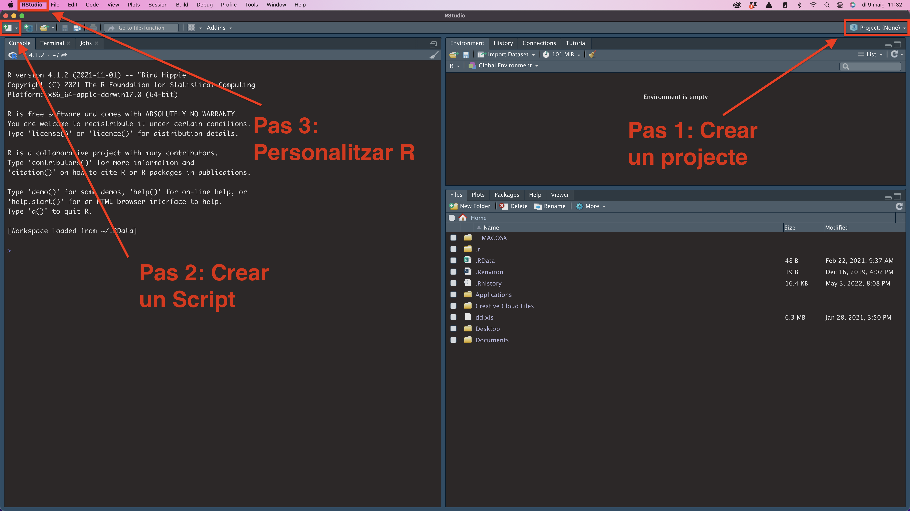

1.2 Orientació a RStudio
Quan entrem a RStudio per primera vegada (a partir d’ara ens referirem a RStudio simplement com a R), veurem una imatge semblant a la següent. Els tres primers passos que hem de seguir, detallats més endavant, estan indicats en la imatge:
- Pas 1: crearem el nostre primer projecte des de la part superior dreta de la pantalla.
- Pas 2: crearem el nostre primer script des de la part superior esquerra de la pantalla.
- Pas 3: modificarem la visualització de la interfície del nostre RStudio.

1.2.1 Crear un projecte
Els projectes ens serveixen per ordenar el material amb què treballem: arxius, carpetes, scripts, etc. És molt recomanable que obrim un projecte per cada activitat que fem. Si en una assignatura tenim quatre activitats, l’ideal és obrir quatre projectes, un per cada activitat1.
Pas 1. Crea un projecte: Prem el botó de la part superior dreta de la interfície d’R per crear un projecte. Segueix els passos que s’indiquen en la imatge següent:
Arribaràs a la finestra Create New Project, on hauràs de posar el nom del projecte. A Browse, indica on es troba la carpeta de la teva assignatura (per exemple, Geografia, AnalisiDades, etc.) i posa un nom al projecte a Directory name, per exemple, PAC1 o Prova. Quan premis Create Project, R et crearà una carpeta amb el nom del projecte. D’aquesta carpeta en direm directori de treball.

Cada projecte té associat un directori de treball, que correspon a una carpeta del teu ordinador. És preferible que no hi hagi accents, ni a les carpetes ni al nom del projecte. Per exemple, cal evitar ~/Documents/Adrià/AnàlisiDades. És preferible ~/Documents/Adria/AnalisiDades2.
Un cop haguem creat el projecte, tornarem a la interfície principal d’RStudio. Fixem-nos que el botó superior dret que havíem clicat abans ja té el nom del projecte que hem acabat de crear. R ens mantindrà la sessió iniciada en aquest projecte fins que no indiquem el contrari.
1.2.2 Crear un Script
Ja hem vist que la interfície està dividida en tres finestres, on tenim destacades les pestanyes Console, Files i Environment. Abans de res, crearem una quarta finestra: l’script.
Pas 2. Crea i guarda un script: A l’extrem superior esquerre de la interfície d’RStudio podràs obrir un desplegable amb diferents tipus de documents d’R. Seleccionarem el primer: R Script. A continuació guarda l’script al teu directori de treball prement la icona del disquet a la part superior de l’script.3.

Pots guardar els scripts també amb Ctrl+S (Command+S en Mac).
Com veurem més endavant, l’script ens servirà per registrar tots els passos que fem amb R. A vegades, en lloc de l’script tindrem, com a quarta finestra, altres tipus de documents, com l’RMarkdown o Shiny Web App, però per ara només treballarem amb l’script.
1.2.3 Les quatre finestres
Ara ja tenim les quatre finestres a la interfície d’RStudio, amb les quals treballarem habitualment. Anirem descobrint de mica en mica per a què serveix cada una. De moment, és suficient saber que:
- L’script és un document amb el qual podem anotar i transmetre les nostres indicacions a R.
- La consola és l’instrument que utilitzem per interactuar amb R.
- L’environment ens permet consultar tot el que R té emmagatzemat en memòria.
- El files és la connexió d’R amb el sistema de carpetes del nostre ordinador. Normalment hi veurem el directori de treball del nostre projecte.

En aquestes finestres, hi ha algunes pestanyes (marcades amb requadre vermell a la imatge) que també utilitzarem. En veurem la utilitat més endavant. Per ara, només ens cal saber que existeixen: - La pestanya Plots (finestra Files) mostra els gràfics que generem amb R. - La pestanya Viewer (finestra Files) mostra els arxius HTML que generem amb R. - La pestanya Help (finestra Files) mostra els menús d’ajuda. La pestanya Packages (finestra Files) mostra els paquets que tenim instal·lats i carregats. - La pestanya Tutorial (finestra Environment) ens permet avançar l’aprenentatge del programa pel nostre compte amb tutorials àgils. - Les altres pestanyes no les farem servir fins a cursos més avançats.
Pas 3. Personalitza el teu R: Ens devem haver adonat que les captures de pantalla que hem vist anteriorment són amb fons negre, mentre que al nostre ordinador el fons ens apareix en blanc. Per personalitzar el nostre RStudio, anirem a Preferències a la part superior esquerra i seleccionarem Appearance a la finestra que ens aparegui.

La raó principal per la qual s’insisteix en l’ús de projectes és que els projectes estan vinculats a una carpeta del nostre ordinador, que és coneguda per l’usuari. Així, si s’insisteix que tots els arxius que s’utilitzen han d’estar ubicats a la carpeta del projecte, es minimitzen els errors a l’hora de crear objectes a partit d’arxius.↩︎
2. Podem consultar la direcció del directori de treball si teclegem a la consola
getwd()↩︎Amb Windows, també el podem crear amb la drecera de teclat Ctrl+Shift+N. Amb macOs, Command+Shift+N.↩︎